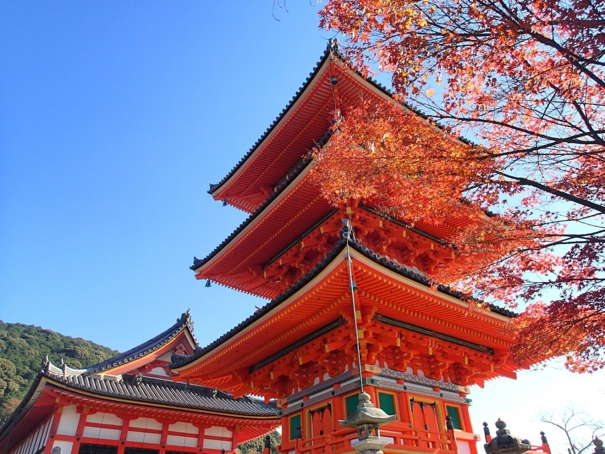
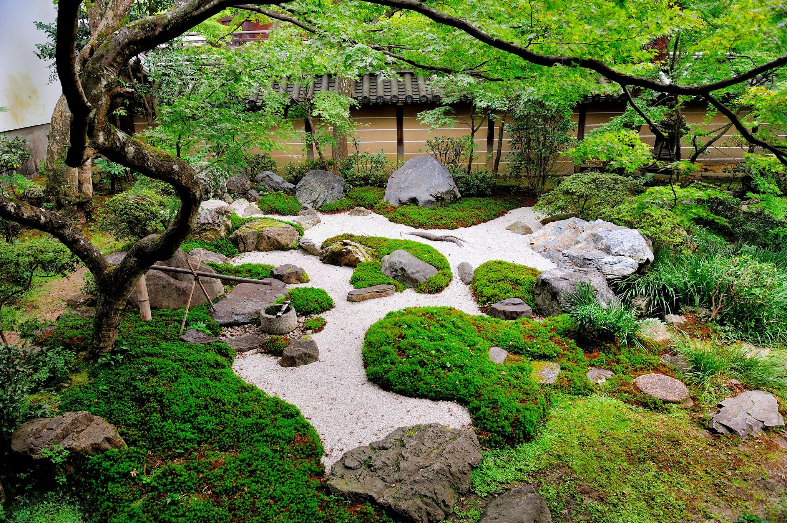
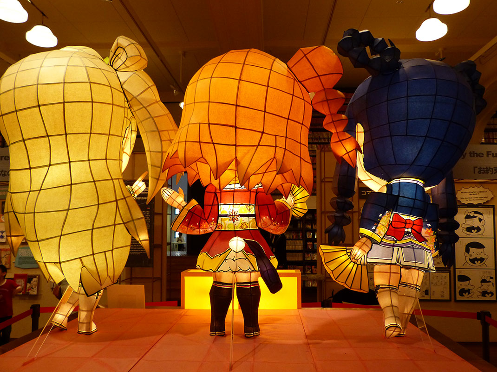
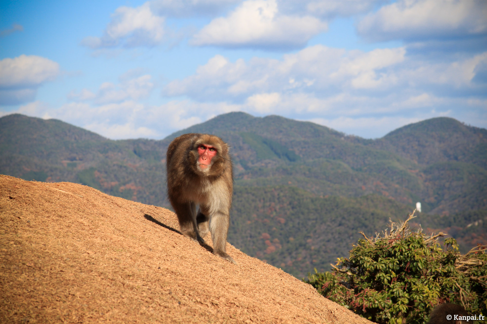

De taille pourtant modeste face à certaines des villes proches du Kansai, avec moins d'un million et demi d'habitants sur à peine plus de 800 km²,
Kyoto séduit en particulier pour son environnement traditionnel, ainsi que par la présence d'innombrables temples, sanctuaires et autres jardins
japonais (il y en aurait près de deux mille au total) qui ont façonné son architecture autant que son identité. D'ailleurs, la construction des
immeubles ne peut pas dépasser une certaine hauteur pour laisser la vue aux bâtiments traditionnels et aux montagnes environnantes. Alors, envie
de découvrir le Japon imperiale ? Kyoto est le bon choix!

Les temples
Avec plus de 1600 temples bouddhistes, 400 sanctuaires shintoïstes et 17 sites inscrits au Patrimoine Mondial de l’UNESCO,
l’étendue du patrimoine de Kyoto donne le vertige ! Petit conseil : lorsque vous visitez Kyoto, n’essayez pas de vous rendre
dans 2 zones trop éloignées le même jour, vous risquez de perdre une grosse partie de votre journée dans le bus. Concentrez vous dans une zone et explorez la au maximum.

Les jardins japonais
Les jardins japonais sont emblématique du pays du soleil levant qui a su les élever au rang de véritable art.
Il est donc difficile de se demander que faire à Kyoto sans inclure dans son itinéraire de visite quelques-uns des plus beaux.
La ville regorge aussi de nombreux espaces publics qui invitent à la promenade. Ce sont des lieux de vie,
où se rencontrent les kyotoïtes pour y célébrer Hanami ou tout simplement s'écarter momentanément de l'agitation de la ville.

Musée internatonale du MANGA
Le Musée International du Manga de Kyoto est une bibliothèque consacrée au neuvième art japonais, située en centre-ville de Kyoto, pas très loin du château Nijo.
Ouvert en novembre 2006 dans une ancienne école primaire, la galerie présente une collection de plus de 300.000 ouvrages : la plupart en japonais, avec quelques mangas en anglais et français.
Vous y trouverez des expositions sur l'histoire du manga ainsi que des démonstration de dessin et des ateliers. Vous pouvez même faire
dessiner votre portrait dans un style de personnnage manga.

Iwatayama, le parc aux singes
Iwatayama est, en réalité, le nom de la colline qui abrite ce parc naturel où des dizaines de singes vivent quotidiennement
.Elle est située dans le quartier d'Arashiyama à l'ouest de Kyoto. Après une courte randonnée,
les voyageurs sont invités à contempler plus d'une centaine de macaques vivant sur une plate-forme, offrant en prime une belle vue sur l'ancienne capitale impériale.